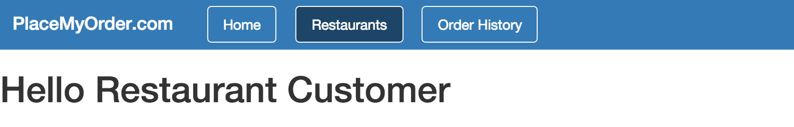
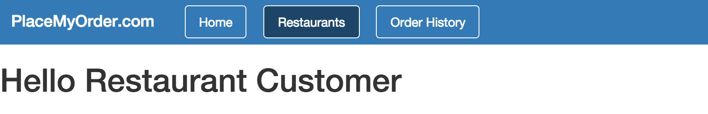

If you recall from the introduction, a can.Component is like a self-contained,
mini web application; in other words, it’s encapsulated. Because can.Component’s are
encapsulated, they should each contain their own:
View template file (.stache file)
JavaScript file
CSS file
This is why we created a components folder for our app—instead of, say, a
js folder. Each component we develop will be in a folder that contains all
the files that support that component. This makes components portable,
enabling you to reuse them across projects. It also isolates them, making
them easier to test and maintain.
Put the following code inside components/restaurant_list/restaurant_list.js:
Now, go back out to your app in the browser and refresh it. On the Restaurants page, you should
see it printing: "Hello Restaurant Customer".

Auto Instantiation
If you recall from our previous discussion regarding can.Construct, whenever you
declare an object using can.Construct, it must be instantiated. Normally, you
would either directly instantiate objects using the new keyword, or pass the
constructor to an object that would create instances of it. can.Component is
an exception.
All we have to do is declare the can.Component using its extend function.
Once you declare your can.Component, you’ve registered your component with CanJS.
When CanJS parses the main.stache file and encounters the
<pmo-restaurant-list> tag, it will automatically instantiate the can.Component
associated with it, generate the component’s view inside of its custom tag,
and bind that view to your component’s scope.
Basic Anatomy of a can.Component
The can.Component we created above had three properties.
The can.Component’s tag property associates that
can.Component with a specific, custom HTML tag.
As mentioned above, when the template containing the can.Component’s tag is
parsed, the can.Component is instantiated and the contents of its rendered
template are inserted as the HTML contents of the custom tag.
Template
The template property of the can.Component contains the string
value of the can.Component’s template. Note that the template property just
contains a string value. You can inline the template, if it is small. However,
the recommended way of working with templates, to maintain separation of
concerns, is to keep them in their own files and load them using can.view, as
we have done here.
View Model
The viewModel object is the can.Component’s view model. The view
model is an abstraction of the view that exposes public properties and
functions. Any property or function defined on the view model object is available
from the can.Component’s template as either a Stache data key, or a function.
In our example above, we created the property currentRestaurant and then
referenced it as a Stache data key in our template.
In this Chapter
can.Componentcan.ComponentGet the code for: chapter: components
First can.Component
If you recall from the introduction, a
can.Componentis like a self-contained, mini web application; in other words, it’s encapsulated. Becausecan.Component’s are encapsulated, they should each contain their own:This is why we created a
componentsfolder for our app—instead of, say, ajsfolder. Each component we develop will be in a folder that contains all the files that support that component. This makes components portable, enabling you to reuse them across projects. It also isolates them, making them easier to test and maintain.Put the following code inside
components/restaurant_list/restaurant_list.js:Add the following code to
components/restaurant_list/restaurant_list.stache:Finally, we need to add a reference to
components/restaurant_list/restaurant_list.jsin the index.html file. Find this line:and replace it with this line:
Now, go back out to your app in the browser and refresh it. On the Restaurants page, you should see it printing: "Hello Restaurant Customer".

Auto Instantiation
If you recall from our previous discussion regarding
can.Construct, whenever you declare an object usingcan.Construct, it must be instantiated. Normally, you would either directly instantiate objects using thenewkeyword, or pass the constructor to an object that would create instances of it.can.Componentis an exception.All we have to do is declare the
can.Componentusing itsextendfunction. Once you declare yourcan.Component, you’ve registered your component with CanJS. When CanJS parses themain.stachefile and encounters the<pmo-restaurant-list>tag, it will automatically instantiate thecan.Componentassociated with it, generate the component’s view inside of its custom tag, and bind that view to your component’s scope.Basic Anatomy of a can.Component
The
can.Componentwe created above had three properties.The “tag” Property
The
can.Component’stagproperty associates thatcan.Componentwith a specific, custom HTML tag.As mentioned above, when the template containing the
can.Component’s tag is parsed, thecan.Componentis instantiated and the contents of its rendered template are inserted as the HTML contents of the custom tag.Template
The
templateproperty of thecan.Componentcontains the string value of thecan.Component’s template. Note that the template property just contains a string value. You can inline the template, if it is small. However, the recommended way of working with templates, to maintain separation of concerns, is to keep them in their own files and load them usingcan.view, as we have done here.View Model
The
viewModelobject is thecan.Component’s view model. The view model is an abstraction of the view that exposes public properties and functions. Any property or function defined on the view model object is available from thecan.Component’s template as either a Stache data key, or a function. In our example above, we created the propertycurrentRestaurantand then referenced it as a Stache data key in our template.‹ App State and Routing View Models ›